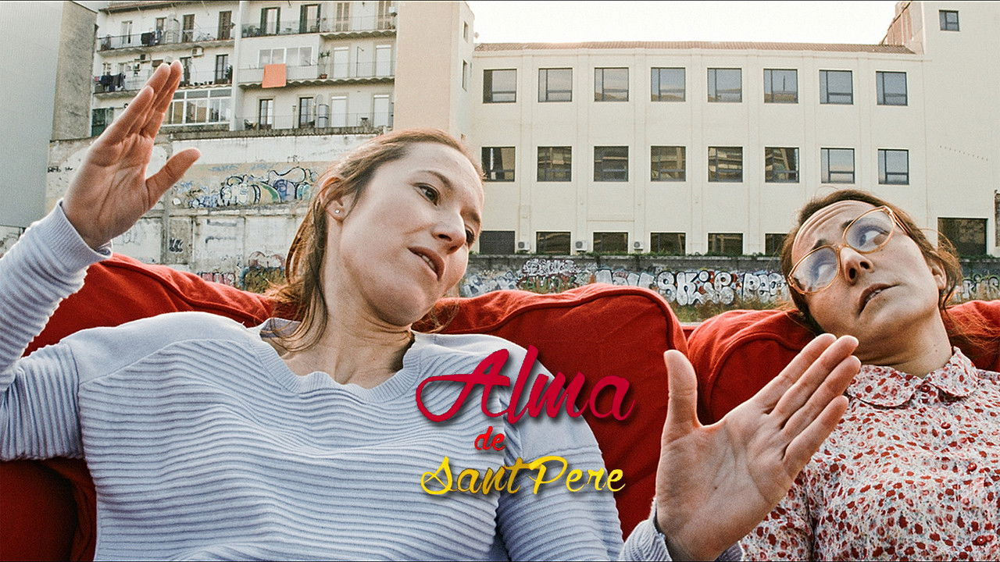
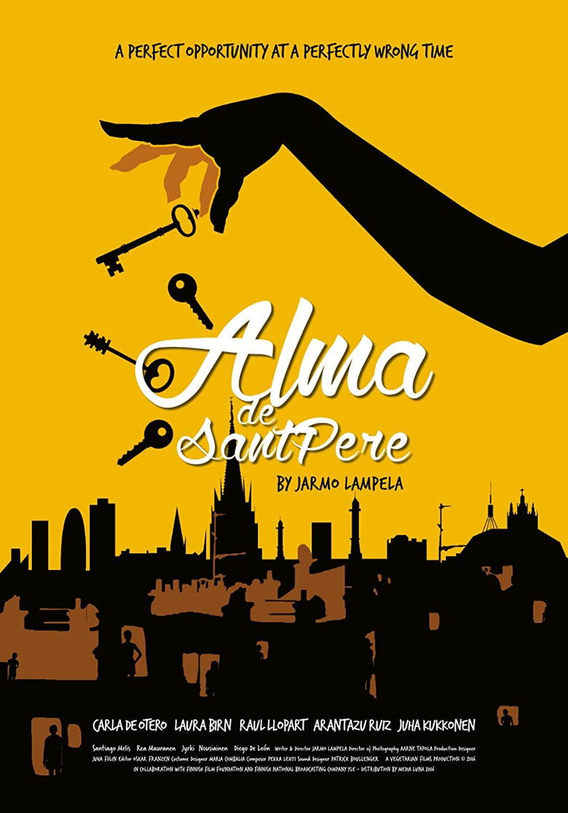

“Una oportunidad perfecta en un momento perfectamente equivocado.”

Largometraje
Alma de
Sant Pere
Sant Pere
Drama · 96' · 2016 · Finlandia / España

Alma es una joven ambiciosa que dirige una pequeña empresa en Barcelona. Sueña con un proyecto más grande — uno que traiga el primer millón. Cuando surge la oportunidad, ella y sus amigos compran un viejo edificio en el histórico barrio de Sant Pere con planes de renovarlo en apartamentos de lujo.
Pero el proyecto obliga a Alma a enfrentarse a lo que está dispuesta a sacrificar: los inquilinos que llaman hogar al edificio, las amistades que hicieron posible la aventura y, en última instancia, su propio sentido del bien y del mal.
Alma de Sant Pere es una película sobre la colisión entre tradición y progreso, entre la lógica del beneficio y el coste del compromiso moral. Ambientada en las calles soleadas y las fachadas desconchadas de Barcelona, pregunta qué queda cuando la ambición ha seguido su curso.
Tráiler
Créditos
Director, guionista y productor — Jarmo Lampela
Reparto — Carla de Otero, Raül Llopart, Laura Birn, Arántzazu Ruíz, Juha Kukkonen, Rea Mauranen, Santiago Melis
Fotografía — Aarne Tapola
Música — Pekka Lehti
Montaje — Oskar Franzén
Diseño de producción — Juha Filin
Diseño de vestuario — Maria Combalia
Diseño de sonido — Patrick Boullenger
Producción — Vegetarian Films
Técnico
96 min · 2.39:1
Color · 5.1
Español, inglés, catalán
Subtítulos: inglés
Festivales
Helsinki IFF (Estreno mundial)
Goa IFF (Estreno int'l)
Beijing IFF (Panorama)
Pune IFF
Cine Global Dominicano
Ventas y distribución
Ventas internacionales:
Buenos Bandidos Producciones
Disponible en
Amazon Prime Video
Apple TV